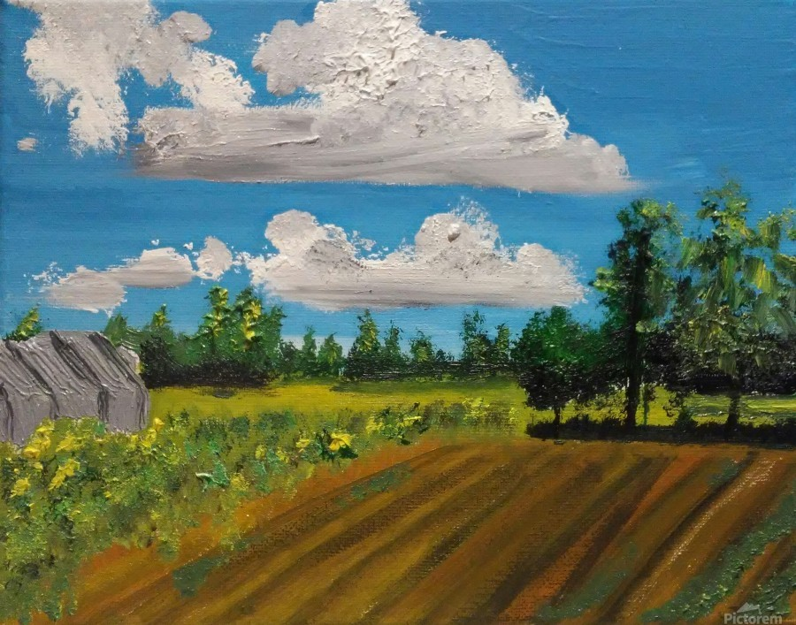

Prose
Thornton Strawberries

Pop floats above the Pacific Ocean, drawing chalk lines on the saltwater, organizing the Santa Monica Bay into discrete parts.
Water, here. Sand, there.
He collects the fish and other sea creatures then loads them all into a rectangular stack on the beach, Tetris-style. But the game pieces won’t cooperate. Kelp is sliding out of place, fish are thrashing and gasping, sandcrabs are burrowing into the sand, and there’s a pair of conspiring seals at the bottom of the stack, staring down Pop with a whiskery grin, signaling their plan to fuck it all up. Pop hovers above the water nonetheless, brow furrowed, putting each piece, each critter, carefully back where it belongs, then he uses the chalk to demarcate where each piece in the stack must remain.
I’m watching it happen from a cliff overlooking the ocean. My bare feet start to ache so I wiggle my toes to get the blood moving. The grass is frosted over. I turn away from the ocean 180 degrees and see my home, a pale midcentury bungalow surrounded by a moat of palm trees, each leaning away from the ocean as if in retreat, each carrying these massive, smash-your-windshield fronds, waiting for the right gust to set them free. As if on cue, the wind explodes my hair forward over my ears and around my eyes so I turn my attention back to the water, and then the ocean’s damp, briney air is filling my eyes and mouth. But down below, Pop remains steady through it all, gliding over the whitecaps and through the fog as if riding an invisible rail. I’m still perched on the cliff, far away from him, but I can somehow see the particles of chalk dust falling gently from Pop’s fingers. Each minuscule grain comes to a brief rest on the water’s surface before sinking through the currents, then finally, settling on the ocean floor. Down there, it is quiet and everything is still.
Pop finishes his work, then vanishes. He leaves the ocean like a freshly tailored suit, methodically marked with chalk lines so that everything is neatly designated, in its rightful place. I’m alone on the cliff with the wind, the twirling, distant gleam of the Point Vicente Lighthouse, and the sound of airborne seagulls crying keeow-keeow-keeows.
*
I roll over to tell Jess. But she’s still asleep and I know better than to wake her. Since William was born, neither of us has been sleeping well. I know Jess has it worse, with all the nursing. William still hasn’t slept through the night. The pediatrician’s office has written us off as overanxious new parents and stopped returning our calls. We’ve gotten the books and listened to the podcasts. Our friends who beat us to this phase of life have shared all their tips and sleep-training pearls. The mother-in-law has imparted her judgy, unsolicited advice.
None of it’s working. The kid won’t sleep, so we don’t sleep.
What
I’m trying
to say
is that we’re very tired.
To say that we’re fall-asleep-at-the-wheel-tired would be imprecise because, since the kid arrived, we never seem to leave the house. No, we’re fall-asleep-on-the-toilet-tired. My vision is blurry, my eyes sting, and I worry they only see the things my irritability allows: dishes stacked in the sink, encrusted with last week’s frozen lasagna, the laundry, clean and dirty, intermingled and splayed across the bedroom floor, and the treadmill collecting dust and the weights, cobwebs.
I don’t remember the last time Jess and I went on a date, and when we speak, which is increasingly rare, William is the only subject we cover. So, we zombie-walk past each other in the hallway, fighting a persistent nausea and the sensation that time has stopped moving forward. On the days that are particularly hard, I imagine some insidious creature residing in my head, tugging on my optic nerves, pulling my eyes deeper into my skull, sucking the oxygen out of my lungs, and whispering vile things into my ears from the inside. I named the creature Donald.
This is how the sleep-deprived brain works. Or how it doesn’t.
Recently, my thoughts about the kid will ping-pong between drunken adoration and a boiling, animal fury. William is this wondrous miracle who brings us endless joy, but also, this diaper-clad fascist who dominates every part of our lives. Several years ago, in our other life, before William, we spent a summer together in the Wind River Range, often spending several days at a time, hiking, climbing, or backpacking. One of the locals I befriended once explained that male grizzly bears, if given the chance, will eat their own cubs. At the time, I was horrified. Now, I sort of get it.
I lift the covers, press my feet to the hardwood floor, then stand to a chorus of middle-age cracks and clicks. Pallid light seeps through the window, and William stirs on the monitor. I shut it off before he wakes Jess. I shuffle down the hallway, open the door to William’s room, and a scentwave of shit crashes over me. I dryheave twice while changing his diaper, then retreat downstairs toward the sanctuary of coffee with William in the crook of my arm.
*
When I was 12 years-old, I stole a kiss from Julie McDonough, a girl I’d known since kindergarten. Three hours later, my father was killed in a plane crash.
The kiss happened in Julie’s parents’ garage shortly after her mother brought us a pitcher of lemonade. Mrs. McDonough set the pitcher down, returned to the kitchen, and I made my move. Afterward, I chugged the lemonade, smashed the empty plastic cup down onto the card table, then strutted home, convinced I had crossed some threshold into manhood. Twelve is young, but at the time, I felt mature. Wise. I felt ready for adult things: graduation, a career, a mortgage. These were the things on my mind when the kitchen telephone rang. It was my father calling on his new brick-shaped Motorola.
“Henry! How’s your day going?”
It was hard to hear him. Maybe all those early mobile phones were shit, rife with static and interference, plagued with poor reception. Or maybe the propeller noise drowned out his voice. I can’t remember exactly.
Louder, he repeated himself. “HOW’S IT GOING?”
“Things are fine, dad,” I replied. I didn’t say anything about the kiss, though it was still on my mind. I wonder now if I didn’t tell him about it because the reception was poor, the timing was inappropriate, or whether I was just uncomfortable sharing such a personal moment with him. It’s difficult to autopsy a short conversation thirty years after it happened.
“I’m on my way home. Tell mom I’ll land sometime around 2:30, okay?”
“Okay, I’ll let her know.” Then he hung up and that was it.
I was the last person to hear his voice.
It was a fluke accident that had no obvious cause or logical explanation. Many years later, during my first year of law school, I unearthed the FAA’s investigation report about my father’s accident. At the time, I remember hovering my cursor above the electronic file bearing my father’s name, which appeared in fluorescent blue hyperlinked font, then pausing to consider whether I should click it, potentially revealing the sort of details that are not shared with grieving 12 year-old boys. The report was a dozen pages long and full of meticulous facts about the weather, visibility, altitude, aircraft maintenance records, communications with air traffic control, and statements from witnesses on the ground. The wreckage photographs were redacted, mercifully. On the final page of the report, in the section identifying probable causes of the accident, the author simply wrote “UNKNOWN,” which felt oddly validating. Comforting, even. It wasn’t pilot error, or a mechanical malfunction, or some weather-related phenomenon. It was as if the government experts who investigated my father’s death had confirmed, in some official capacity, that life dealt its cruelty on a random basis, that sense or logic played no role, and there was nothing anybody could do about it.
I sometimes wonder if the two events were related—the kiss and the crash. I don’t mean to suggest that kissing Julie caused my father’s accident. But I’d sometimes consider whether experiencing the two events on the same day—one high, one low—signified some hidden causal link that I couldn’t perceive. When I was a teenager, I’d imagine some amorphous godlike entity, sitting on a cloud or hovering in outer space, thinking to himself, or herself, or itself… perhaps I should let the kid kiss his crush since I’m killing his dad later this afternoon, as if the joyful moment was granted to offset the despair that would follow soon after. Years later, after college, I thought about that day more in terms of coincidence and probabilities. The statistical chance of losing your father on the same day you have your first kiss must be astronomical. When the odds are too remote, however, the human brain searches for meaning in mathematical improbability where there is none, convincing itself that the tragedy couldn’t possibly be random luck or chance.
Since William, I’m not sure what to think about that day, apart from being in awe of how quickly and indiscriminately the course of a person’s life can change.
*
Jess finally wakes and comes downstairs. I tell her about my dream, about Pop hovering above the ocean. “Hmm, weird,” she replies, opening the tea box, finding the Earl Grey, and reaching for a mug. In silence, she stares at the stove, waiting for the water to boil.
There was a time when this sort of thing would have excited her. I don’t dream very often, and when I do, the memory usually disintegrates when I wake, leaving me with unhelpful fragments of the story that unfolded while I slept. I’d wake, tell Jess how I dreamt, for example, that I was back in college and my roommate was a rhinoceros. She’d reach for her dream journal—she actually keeps such a thing—to jot down notes and try to draw some deeper meaning from what I remembered. But then she’d ask questions and I become useless.
“What were you doing in the dream?”
“I don’t remember.”
“What was the rhinoceros doing?”
“No idea.”
“Was it a real rhinoceros from Africa? Or like, an anthropomorphic rhinoceros that was wearing clothes and smoking a cigarette?”
“Hmm. Wait, maybe it was a hippo.”
She’d inevitably roll her eyes, exasperated at my inability to remember these critical details, presumably because recalling such things came so easily to her. Jess is the sort of person that notices every characteristic about the things around her, even in her dreams. Before William, she used to spend weeks painting these beautiful oil still lifes that would capture every possible detail of what her eyes perceived. Her orange, for example, would include the tiny, forest-green stem where the fruit was pulled from a tree in haste before it was fully ripe, and the hundreds of minuscule dimples that spanned its leathery exterior, except on one side, where earlier that week, I had shaved the peel to make an old fashioned, thereby exposing the spongy pith underneath and rendering its spherical shape slightly unbalanced, causing it to lean toward the very edge of the book on which it sat, which wasn’t some generic prop, but The Collected Poems of Philip Larkin—a jacket-less hardcover with bent edges and dozens of coffee ring stains that eclipsed each other—which is probably why Jess found the book in the $1.00 EACH stack at a Redondo Beach thrift store instead of the Boston Public Library, which is what the stamp on the page edges spelled in capital letters in burgundy ink, which was a darker shade of red than the ceramic vase that stood in the background, which was more of a faded-tomato, and empty, but adorned with seafoam green flowers and cerulean hummingbirds, with a hairline crack that ran vertically along one side of the vase and directly through the head of the second-smallest hummingbird. I only know about these details because Jess pointed them out.
What I saw was an orange, resting on a book, beside a vase.
My point is this: if people live their lives with varying degrees of awareness, if some people perceive the world more carefully than others, then Jess and I fall on opposite points on the spectrum.
Now, at this moment, I watch Jess slowly steep her tea and realize that she is too tired to discuss dreams or anything else. We eat our breakfast in cemetery silence. Together in one sense, separately in another.
*
When my grandparents arrived the morning after the accident, my mother was in bed, where she’d remain for some time. I greeted them in the driveway, alone. My grandmother hugged me tighter and longer than usual. I remember inhaling her familiar, powdery perfume, and thinking, in that typical, adolescent, egocentric way, that everybody must be really worried about me. Now, I think she must have been thinking of her own son—my father—and feeling all the painful things a mother in mourning must experience. When she finally let go, Pop stood before me, a suitcase in each hand, and spoke with his matter-of-fact voice, “your eyes are hazel too.” Those were the first words he said to me after it happened. Then he walked past me into the house. My grandfather was not known for his warmth.
But he tried. A few weeks after the funeral, Pop began appearing on the sidelines at my soccer games, out of place and thoroughly unequipped. No chair. No umbrella. No drinks or snacks. He didn’t cheer. He just stood there, baking in the sun, awkwardly watching the game while the other parents chatted amongst themselves, occasionally jumping and whooping when the game grabbed their interest. Afterward, Pop didn’t offer any compliments about how I played or thoughts about game strategy. We walked back to his car, together, in silence. Then he drove me home, in silence. I used to wonder what went through his mind during those moments, at the soccer field or driving home in the car. Was he watching me? Was he thinking of my father? Was he thinking of anything at all? How closely did he perceive the world around him? Now, since William was born, I’m not sure it matters at all. I think that simply to be near him then, to feel that uniquely familial camaraderie, even when dripping in grief, may have been enough.
*
William wails in his swing. On the table beside him, an upright tablet displays four costumed animals dancing in unison to a homicidal melody that blares from the device’s plastic, tinny speakers. As William and the tablet fight for dominance, my blood pressure rises. Before, our life unfolded to the gentle sound of Nina Simone or Nils Frahm, and with the windows open, the ocean’s hypnotic shushing—its watery inhaling-and-exhaling was our home’s steady soundtrack. Now the place is filled with abrasive, battery-powered noise, and the windows are shut so William doesn’t wake the neighbors. Even at night, when everybody is asleep, a lullaby playlist echoes off the walls and the baby monitor emanates a constant, surveillant fuzz. I punch the tablet’s mute button and unstrap William from the swing.
Jess stares out the kitchen window, wearing the tired expression we’ve each mastered over the preceding months, then speaks.
“We need to change something.”
And then I’m holding my breath, and her words are scalding my ears. I hope she’s referring to William, so Donald whispers she isn’t.
Carefully, I respond. “I didn’t hear him last night. How many times did he wake up?”
Jess doesn’t reply. She just stares out the window toward the ocean clenching her Earl Grey. Now cradling William in my arms, I add, “maybe we should switch him to formula?”
Jess blinks slowly then responds, “...I can’t think, I can’t make any decisions right now.”
I know that new fathers often display unfounded confidence about things they know nothing about, or certainly things about which mothers know more. I don’t mean in the condescending, mansplaining sense, but in the concerned, supportive sense of I have no idea what I’m supposed to do here, so I’m going to fake steadiness. Or maybe, we just outwardly pretend everything is under control because it’s too frightening to admit that nothing is. Whatever the reason, I tell Jess that we’ll figure it out. But I have no idea how to get William to sleep through the night. Donald, now holding a pickaxe, gives my optic nerves a tug.
I carry William across the street to the same cliff where I had stood in my slumber a few hours earlier. The view is spectacular, so the place tends to attract people facing life’s consequential moments. Marriage proposals and weddings. Baptisms and funerals. Teenagers trying to lose or keep their virginity. Addicts struggling with their sobriety. A few months ago, a man stepped off the edge and plunged 300 feet to the rocky shoreline below. Soon after, the city installed a sign nearby which displays the words, “CRISIS COUNSELING” and supplies a telephone number for those in need of help. I walk past the sign to the cliff’s edge with William in my arms, still fussing, imagining all the couples whose romantic engagement photos would now contain a hidden warning about suicide in the background. William and I have the place to ourselves. I watch distant oil tankers crawl across the whitecaps and see faraway jets departing LAX. I stare down at the water, and imagine Pop hovering above it all. William grows quiet. I turn around and head back to the house before Donald can utter a word.
*
A heart attack took Pop during my junior year of high school. At the funeral, my grieving grandmother used the word “inappropriate” to describe Pop’s death, as if fairness was somehow part of the equation. I remember recoiling in my pew and glancing around to see if anyone else heard the absurdity. But nobody seemed to notice.
*
I’m in the attic searching for an old photo of Pop. I don’t remember deciding to climb the ladder up here, but something pulled me up the rungs. I find the photo in an album at the bottom of a decaying cardboard box that wafts vague traces of cigars and old-man cologne. Sitting on a squat wooden stool beneath a pull-string bulb and drifting motes of dust, I remove the photograph from its sleeve, hold it with both hands, and study the image.
Pop is standing alone in the center of an expansive strawberry field. He’s in his early 60s. Not old yet, but getting there. There was a time when Pop had a thick bush of curly black hair that grew upward and outward, like a Chia Pet, or Marge Simpson. But the Black Irish afro—what my grandmother called it—is long gone. His hair is thinning and disheveled. He combed back what little was there, still trying to demarcate a side part between two sides of nothing. His cobalt western shirt is tucked into a pair of faded Wranglers held into position by a brown leather belt with a gold-plated buckle, the sort of garb Reagan would have worn to clear brush at the ranch when the cameras were rolling.
But Pop isn’t performing. He isn’t posing.
Pop’s eyes are flooding, staring directly at the camera through Buddy Holly frames. And because I hold the photo, he’s staring directly at me. The attic is frigid, like the image. His expression is stern and dissatisfied, almost a scowl, as if he’d asked a pressing question to someone whose answer was overdue. His skin is blotchy, his jowls a wrinkled melange of pinks and tans, scored with tiny streams where tears had rolled down his cheeks. I inhale and feel my throat tighten. I shift my weight on the stool, then return to the photo. My eyes fill with strawberries. Vibrant green foliage, planted in neatly organized rows, flares out far behind Pop toward the horizon. But there’s no growth where he’s standing. He’s on an empty patch of burnt soil in the center of the field, roughly the size and shape of a swimming pool. There, the charred dirt has been raked smooth. I turn the photo around and see Pop’s cursive handwriting in blue ink: Thornton, California, January 1993. Two months after the accident.
*
“How was your nap?” I whisper.
“Mmm, glorious,” said Jess, from the couch, still cocooned inside an old wool Pendleton.
“William’s down, so we should have an hour or so. I want to show you this.”
I retrieve the photograph of Pop from my pocket.
“Hmm?”
“Have you seen this before?”
Jess sits up, tucks her auburn hair behind her ear, then extends one hand to take the photo, while the other reaches for her tea, now cold. She widens her eyes to focus on the image.
“I don’t think so. Where did you…where’s he standing?” She turns the photo around to read the back. “Oh.”
“Yeah. He went there, and apparently took my grandmother along, I assume. Someone took the photo.”
“Sorry, what brought this up?”
“I remembered the photograph after I woke up, after the dream. I had forgotten the photo even existed.”
We stared at the photograph together, in silence.
*
At bedtime, I roar my terrible roars and gnash my terrible teeth, then feed William a bottle until he falls asleep. I carry his delicate frame, warm and limp, then quietly lay him in the crib. Downstairs, Jess is at the dining room table, stirring honey into her tea, studying the photo of Pop.
Later, in bed, with the lights out, she asks me why Pop visited the strawberry field.
“I have no idea.”
My eyes begin closing, when Jess speaks again.
“I suppose he was paying his respects. It’s not so different from leaving flowers at a gravesite if you think about it. Just a question of proximity. Like when you see crosses along the highway where people have died. But it’s unsettling to see what it did to the ground and to see him just standing in it.”
“...You lost me. And he’s not holding any flowers in the photo, so I don’t think–”
“–what I mean… is that… for some people, visiting a cemetery might not suffice. To feel a connection, maybe, they need to visit the place where the person’s heart actually stopped beating, and maybe that’s true even if the place itself is changed, scarred. Maybe his need to be close to your dad outweighed seeing the…violence… of the place where it happened.”
I love her for these moments, when she returns to some fleeting topic from an earlier conversation that got lost in the messiness of daily life. Sometimes days or weeks later, she’ll intuitively sense the weight of an unexpressed thought hiding below the surface, then raise the subject, casually extracting some profound observation out of nowhere.
I consider what she said. I shut my eyes tightly and try to picture him, to imagine what he thought and felt in that moment, at that place, without reducing him to the figurative equivalent of an orange, or a book, or a vase. I zoom in as close as I’m able, and then I see Pop driving hundreds of miles from his home to find that field in the middle of nowhere. I imagine him exiting the car with his camera in hand, and walking into the field, between the narrow rows of strawberries, my grandmother following his steps. I smell the earthy soil and feel the breeze against his shirt. Then I see Pop shaking a stranger’s hand, explaining to the man who they were and why they were there. Then the man guides my grandparents to where it happened, and he speaks respectful words I can’t hear, then he walks away to give them privacy. I see them both standing beside the scorched soil, staring at the ground, but then struggle to complete the story. Did they say anything to each other? Did they speak to my father? In my mind, Pop sinks his fingers into the dirt then looks to the clouds above. When I imagine Pop looking to the sky, I immediately see my father’s plane falling out of it, plummeting into the dirt and disintegrating inside a mass of twisted metal and burning fuel. My eyes open momentarily, I see the outline of faint shadows on the ceiling, and sense the clattering of Donald’s approaching claws, but then I close my eyes and return to Pop. Eventually, I find the right words.
“I think he went there out of desperation, to try and make sense of how it happened, or to create a fuller understanding of what happened. Maybe seeing where it happened helped him accept what happened. Don’t people feel in control if they have more facts, more details—even if the sensation of control is an illusion? I don’t know.”
The sheets gently rise and fall with the pace of Jess’s breath. She rolls over to me, wraps her arm over my chest, then speaks. “It’s the same thing, isn’t it? Driving all the way out there, seeing where it happened, desperate to understand why his son was taken—it’s all in service of trying to feel the connection he lost. To grieve, to pay his respects.” She pauses, then adds, “the photo of him feels haunted. Like the camera captured the moment that broke him.”
And then we fall asleep.
*
When I hear William on the monitor beginning to fuss, the clock says 2:15 a.m. I get out of bed, walk down the hallway and open the door to William’s room. The window panes jitter in their frames. Through the trembling glass, beyond the thrashing palm trees, there’s the vague kaleidoscopic movement of moonlit whitecaps interspersed in a sea of darkness. William releases a pouty whimper. The room smells like William. I lean over the crib and he’s there, on his back, in his onesie, staring up at the ceiling, then into my eyes, his feet curled into the air. He is here. And I am here. And everything is still.
Kerry Franich is a California-based writer and attorney. He is an alumnus of the Yale Writers’ Workshop and his work has been featured in The San Antonio Review, The Orange County Lawyer, and other publications.